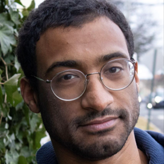

Lucas Campagnaro
Technology, R&D
I build AI and software, and I spent enough years on the business side to know what's worth building.
Before my master's in Data Science & AI at Rutgers, I automated things for commodities traders at BASF, the FICC desks at Bank of America, and my family's manufacturing firm. Now I lead and build: an award-winning ML research team at DIMACS, and an AI video-generation pipeline at Rang Technologies.
If you're building something hard, I'd like to hear about it.
More about meShow less
Most of my career was spent on the side of the table that has the problem. At BASF, I automated the Excel controls commodities traders used for their positions. At Bank of America, I ran and automated macro-driven risk reporting for the FICC desks. At my family's manufacturing firm, I spent three years writing SQL against SAP and replacing manual accounting entries with proper workflows. In all three I ended up as the person who automated things, partly because I love all things technical, and partly because nobody else was going to. At some point that stopped being a side habit, so I came to Rutgers for a master's in Data Science & AI to do it properly.
At DIMACS, I led a research team testing whether an interpretable model could keep up with XGBoost (it got within 1.6 points, 91.98% vs. 93.56%). The Python package I wrote became the whole team's tooling, I worked with the model's authors to patch bugs in their code, and I received the Outstanding Team Lead Extern Award. As an AI intern at Rang Technologies, I built a pipeline that turns a slide deck and a script into a narrated training video, AI presenter included, running on a laptop CPU without a single paid API. I also built a full-stack attendance system, and a small offline PDF tool my colleagues run straight from a shared drive, because nothing they handle should be uploaded to a random website.
The building started before any of it was technical. In college, I was a founding member and later President of FEI Finance, which began as an idea on paper with almost no members. I built its weekly operating model and recruiting pipeline, and grew its speaker events from about 20 people to 150+. The difference now is that I write the code myself.